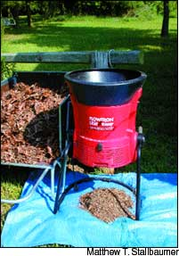
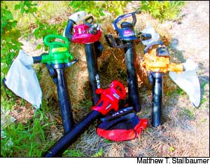

Issue #206 - October/November 2004
Mother Nature has a plan for those fall leaves - and it doesn’t include sending them to the dump.
In the natural world, fall leaves insulate plant roots from winter cold. As the leaves decompose, they provide food and shelter for worms and microbes that nourish the soil and keep plants healthy. In their final stages, decomposed leaves become one of the ingredients in good, rich soil. The last thing we should be doing is sending this valuable natural resource to the landfill, but that’s exactly what far too many of us do. Here’s a quick summary of why and how to keep your leaves on your land, including our assessment of tools for leaf shredding to help you manage this fall bonanza.
• Mowing. Just mow over ’em and let the pieces sift back into the grass. Mulching mowers chop most leaves up pretty well so that they can become mulch for your grass. For tough leaves like oak, mow ’em twice and then rake up any remaining pieces if you like the tidy look, or just let the wind blow them into the shrubs or woods.
• Composting. If you have lots of trees that dump more leaves than your mower can handle, set up some big wire mesh cages, fill them with leaves and let the leaves compost for a year or two. They will turn into fragrant, crumbly leaf “mold” that you can use to improve your garden soil, or to mulch your plants. For faster composting, mix grass clippings into your leaf bins next summer.
• Shredding. To reduce the bulk of the leaves and speed up handling and decomposition, consider shredding them with your mower before you rake them up for composting. Mowing in circles, blowing the chopped leaves toward the center, will do a pretty decent job of shredding most kinds. Shredded leaves make a terrific amendment for garden soils. They improve the soil’s structure and water-holding capacity, reduce crusting and add slow-release nutrients, according to researcher Abigail Maynard, who has studied the effects of leaf compost on numerous crops at the Connecticut Agricultural Experiment Station. She also has found that adding fresh leaves to garden soils may temporarily reduce yields of some crops, so it’s best to let the leaves age in compost bins for a year or so before you add them to your beds. Or use the leaves to mulch paths where you want to discourage weeds, then rake them up after a year or so, when they will be pretty well composted, and add them to your garden beds.
If you shred your leaves, they’ll be easier to manage - less bulky and less prone to blow around - wherever you use them. Because shredded leaves make such a great, free mulch and garden soil amendment, and because we want to encourage everyone to recycle leaves whenever possible, we decided to try out several power tools marketed for leaf shredding. Here’s what we learned:
Many gas or electric-powered blower/vacuums can be used to finely shred leaves. We tried five brands and thought they worked fairly well, but all were prone to clogging when they sucked in twigs. Particularly for folks with physical limitations, these tools are useful; use the blower mode to concentrate the leaves and the vacuum mode to suck them up and shred them.
The Black & Decker Leaf Hog features a new bag system that is easier to empty than the other models. We would recommend these tools only if you plan to use them for shredding fairly modest amounts of leaves. (If you just need to sweep your driveway and sidewalks, a broom and a little muscle power is the more sustainable and quieter way to go. And, with all of these power tools, we recommend wearing ear protection.)
In our tests, we found one tool made specifically to shred leaves. Called the Flowtron Leaf Eater (LE 900), it is essentially a large hopper with a string trimmer in the bottom. You toss leaves into the hopper and spinning strings quickly shred them into a very nice mulch. This electric-powered machine shreds leaves considerably faster than the blower/vacuums, and we found it chopped straw into mulch nicely, too.
This Flowtron is improved over the model we used several years ago. It’s now easy to replace the strings when they wear down, plus an elastic cord around the bottom of the hopper holds trash bags in place to catch the shredded leaves.
The Flowtron LE 900 sells for about $180 from www.leafmulcher.com or www.charliesgreenhouse.com .
If you’ve already learned to love your leaves, share your praises with us at letters@MotherEarthNews.com .
|
 The Flowtron Leaf Eater quickly shreds leaves or straw into a fine mulch. |
 The leaf blower/vacuums we tested ? Weed Eater, Mantis, Toro, Poulan and, bottom center, the Black & Decker. |
|